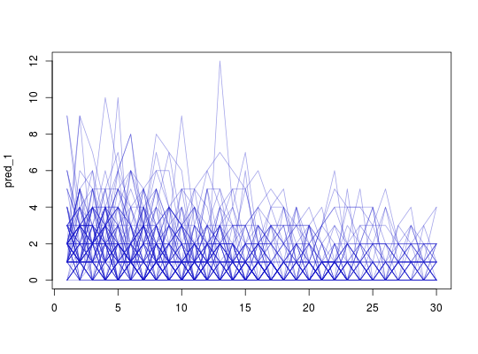
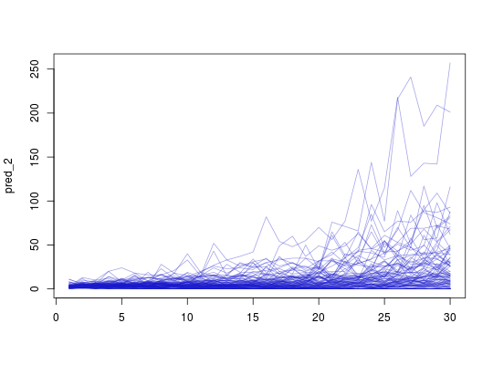
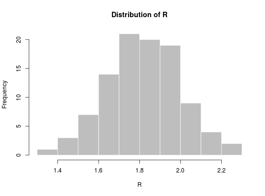
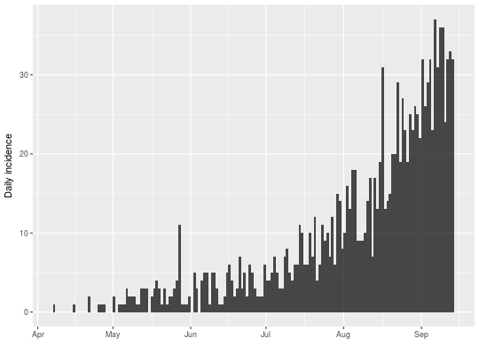

Project future incidence
This function simulates future incidence based on past incidence data, a selection of plausible reproduction numbers (R), and the distribution of the serial interval (time from primary onset to secondary onset).
project(x, R, si, n_sim = 100, n_days = 7, R_fix_within = FALSE)
Arguments
- x
- An
incidenceobject containing daily incidence; other time intervals will trigger an error. - R
- A vector of numbers representing plausible reproduction numbers; for
instance, these can be samples from a posterior distribution using the
EpiEstimpackage. - si
- A function computing the serial interval, or a
numericvector providing its mass function. For functions, we strongly recommend using the RECON packagedistcreteto obtain such distribution (see example). - n_sim
- The number of epicurves to simulate. Defaults to 100.
- n_days
- The number of days to run simulations for. Defaults to 14.
- R_fix_within
- A logical indicating if R should be fixed within
simulations (but still varying across simulations). If
FALSE, R is drawn for every simulation and every time step. Fixing values within simulations favours more extreme predictions (see details)
Details
The decision to fix R values within simulations
(R_fix_within) reflects two alternative views of the uncertainty
associated with R. When drawing R values at random from the provided
sample, (R_fix_within set to FALSE), it is assumed that R
varies naturally, and can be treated as a random variable with a given
distribution. When fixing values within simulations (R_fix_within
set to TRUE), R is treated as a fixed parameter, and the
uncertainty is merely a consequence of the estimation of R. In other
words, the first view is rather Bayesian, while the second is more
frequentist.
Examples
if (require(distcrete) && require(incidence)) { ## simulate basic epicurve dat <- c(0, 2, 2, 3, 3, 5, 5, 5, 6, 6, 6, 6) i <- incidence(dat) plot(i) ## example with a function for SI si <- distcrete("gamma", interval = 1L, shape = 1.5, scale = 2, w = 0) barplot(si$d(0:30), main = "Serial Interval") set.seed(1) pred_1 <- project(i, 1.2, si, n_days = 30) pred_1 my_col <- rgb(.1, .1, .8, .4) matplot(pred_1, type = "l", lty = 1, col = my_col) ## example with empirical serial interval si <- c(0, 1, 2, 1, 0.5) set.seed(1) pred_2 <- project(i, 1.2, si, n_days = 30) pred_2 matplot(pred_2, type = "l", lty = 1, col = my_col) }
## example using simulated Ebola outbreak if (require(outbreaks) && require(distcrete) && require(incidence)) { si <- distcrete("gamma", interval = 1L, shape = 0.37, scale = 41.4, w = 0) i <- incidence(ebola_sim$linelist$date_of_onset) plot(i) ## projections after the first 100 days, over 60 days, fixed R to 2.1 ## lower R, but accounting for under-reporting set.seed(1) proj_1 <- project(x = i[1:100], R = 1.4, si = si, n_days = 60) ## adding them to incidence plot plot(i[1:160], proj = proj_1) ## projections after the first 100 days, over 60 days, varying R set.seed(1) R <- rnorm(100, 1.8, 0.2) hist(R, col = "grey", border = "white", main = "Distribution of R") proj_2 <- project(x = i[1:100], R = R, si = si, n_days = 60) ## adding them to incidence plot plot(i[1:160], proj = proj_2) ## same, but R is constant per simulation set.seed(1) proj_3 <- project(x = i[1:100], R = R, si = si, n_days = 60, R_fix_within = TRUE) ## adding them to incidence plot plot(i[1:160], proj = proj_3) }